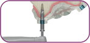
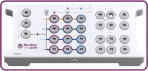
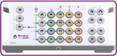
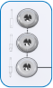
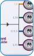
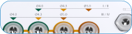

Controle e precisão na angulação do leito do implante
Controle de profundidade mais preciso, com stops de broca
Inserção de implante guiado

As conexões garantem que o implante atinja a posição
planejada com precisão
Compensação: 10 mm
1 - Captura de dados
Tomografia computadorizada 3D (CB) (DICOM) scaneamento intraoral
ou de laboratório (imagens STL)
2 - Planeamento virtual
Implante posicionado respeitando a anatomia e o resultado
protético do paciente.
O Neodent® EasyGuide é compatível com os principais softwares
3 - Produção da guia cirúrgica
O guia cirúrgico deve conter anilhas que orientam os instrumentos e
os implantes
4 - Procedimento cirúrgico
A Neodent® EasyGuide contém dois kits cirúrgicos, selecionados de
acordo com o diâmetro do implante
Kit EasyGuide estreito/regular • Ø 3,5, Ø 3,75

1
2
3
Kit EasyGuide regular/largo • Ø 4,0, Ø 4,3, Ø 5,0

1
2
3

Início único, independentemente do tipo de osso
1

Identificação simples do comprimento do implante
2

3
Sequência de perfuração com código de cores para cada diâmetro de
implante
Anilha estreita: Ø3,5/Ø3,75
Anilha regular: Ø4,0/Ø4,3/Ø5,0
Dra. MAJA CHMIELEWSKA, Polônia
‘‘Na clínica a gente faz 100% das nossas cirurgias guiadas, isso ajuda
muito. A restauração protética no final do tratamento, mas também para
o conforto do paciente e para a fluência das nossas cirurgias. Eu
recomendaria começar assim! O EasyGuide é muito útil e muito fluente
para nosso uso e prática cirúrgica’’